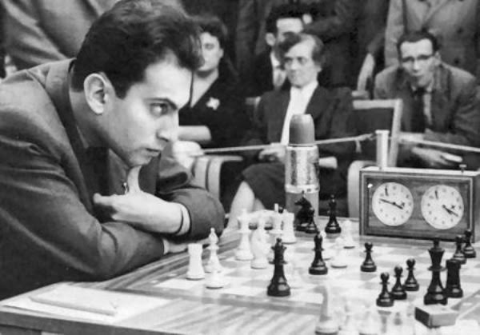
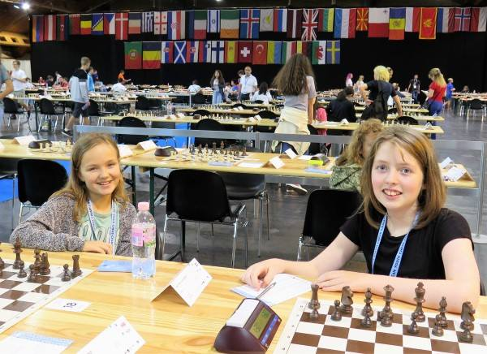
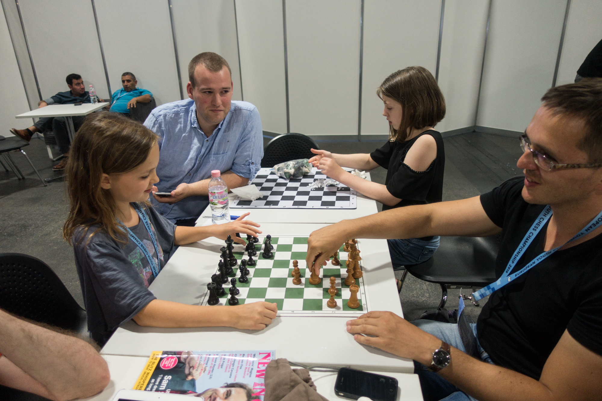

Europees Kampioenschap Schaken 2018!!Van 19 t/m 29 augustus heb ik het Europees kampioenschap schaken in Riga gespeeld. Riga is de hoofdstad van Letland en met ongeveer 720.000 inwoners de grootste stad in de Baltische staten. In Riga is een hele bekende schaker geboren: Michail Tal. Hij is geboren in 1936 en ging dood toen hij 55 was. Tal is heel erg goed en houdt veel van aanvallen. Hij heeft ook een keer het wereldkampioenschap gewonnen. Dat was in 1960. Hij speelde toen tegen Botwinnik en won met 12.5-8.5. In 1961 moest hij de titel weer teruggeven in Botwinnik die van hem won.  Tal blijft bekend door zijn variant in het Siciliaans: 1.e4 c5 2.Pf3 d6 3.d4 cxd4 4.Pxd4 Pf6 5.Pc3 e6 6.f4 Pc6 7.Le3 Le7 8.Df3 Ik deed onder de 12 mee bij de meisjes. Ik was als eerste geplaatst. Ik zat bij Eline op de kamer. Zij deed ook mee bij de meisjes onder de 12 en was als vijfde geplaatst. Het was erg gezellig met haar op de kamer en ze is ook erg aardig. De speelzaal was in een ander hotel, waar we met de bus naartoe moesten. Dat was wel onhandig. Ik en Eline voor de partij (Foto door Zhaoqin Peng) De eerste dag vertrokken we al vroeg met de bus naar de speelzaal omdat daar ook de lunch was. Er waren heel veel kinderen voor de lunch en er was een lange rij. De rij ging wel heel snel voorbij. Na de lunch moesten we nog lang wachten voordat de partijen begonnen. De eerste ronde schaakte ik tegen Sara Olivia Sippola. In de database vond ik partijen waarin ze b6 speelde, maar mijn trainer zei dat ze waarschijnlijk Siciliaans zou gaan spelen. Dat gebeurde ook, ze speelde de versnelde draak. Het was een moeilijke partij. De partij was erg positioneel. ik maakte een paar fouten doordat ik wat velden verzwakte. Uiteindelijk werd er best veel geruild zodat de stelling heel remiseachtig was. Omdat ik geen remise wilde ging ik toen ook nog risico lopen om nog te kunnen winnen maar dit mislukte en ik kwam alleen maar slechter te staan. Zij stond in de eindstelling gewonnen maar nam gelukkig mijn remise aanbod aan. Ik was niet blij dat de eerste partij zo slecht was gegaan. Na de partij ging ik analyseren en daarna ging ik met de bus terug naar het hotel. Toen ging ik naar boven naar mijn kamer, in bad en daarna eten. Ik vond het eten niet lekker, daarna ging ik een klein beetje voorbereiden en toen slapen om ongeveer 22.30. In Nederland was het toen pas 21.30 De tweede dag werd ik rond 8.30 wakker. Normaal in Nederland is dat 7.30 Toen ging ik eten en daarna met Sipke voorbereiden. Daarna ging ik op mijn kamer alles herhalen en toen uitrusten en praten met Eline. Daarna gingen we met de bus naar het schaaktoenooi. Daar gingen we naar de winkel om lunch te kopen want dan konden we later vertrekken en de lunch was daar toch erg vies. Daarna ging ik schaken. Ik kreeg een kadootje van mijn tegenstander, een soort van chocolade, dat was erg lekker. Het was een erg moeilijke partij maar gelukkig won ik. Daarna ging ik weer terug naar het hotel. Het eten was het zelfde als die andere dag en het was weer niet lekker.  (Foto door Zhaoqin Peng) (Foto door Zhaoqin Peng)De volgende dag werd ik 11. Ik kreeg een leuk kadootje van Laurie, heel erg lief van haar. Zij is ook Nederlands en speelde mee met de meisjes onder de tien. Van oma had ik ook een kado meegekregen: het boek 'de kleine prins'. Na het ontbijt ging ik met Sipke voorbereiden. Daarna ging ik schaken. Ik stond erg goed, ik had de stelling onder controle maar toen ging ik de stelling openen wat niet slim was. Hierdoor kreeg zij tegenspel en werd het erg gevaarlijk voor mij. Zij kreeg twee torens op de zevende rij. Ik had toen een kwaliteit moeten offeren maar dat deed ik niet en daardoor verloor ik de partij. De volgende dag speelde ik met zwart tegen iemand uit Polen. Het werd een koningsindische partij waarin ik uiteindelijk kon winnen. De volgende dag was een rustdag. Ik had helaas nog niet veel van de stad gezien omdat je niet alleen naar buiten mocht. Ik zat eigenlijk de hele dag samen met Eline op mijn hotelkamer, dat was best saai en het was niet fijn dat we niet naar buiten konden. Gelukkig ga ik met mijn vader naar het WK, dan kan ik iedere dag even naar buiten. Op de rustdag gingen we zwemmen. Het was erg leuk, er was een bubbelbad, een paar sauna's en een binnenbad. Ik was daar samen met Manisvita, Eline, Daniel, Anna, Laurie en Arthur. 's Middags ging ik voorbereiden voor de volgende dag. Analyse met Sipke Ernst (Foto door Harry Gielen) De volgende ronde speelde ik Frans. Dat speel ik normaal niet, maar ik dacht dat we uiteindelijk in een Siciliaanse stelling zouden komen wat dus niet gebeurde. Ze speelde een variant van het Frans die ik niet kende. Ik won wel. De volgende twee rondes verloor ik helaas. In de zevende ronde speelde mijn tegenstandster erg sterk en kreeg zij een goede koningsaanval. Ik zag geen goede verdediging en deze partij ging helaas verloren. De achtste ronde speelde ik Italiaans. Deze opening vind ik altijd heel fijn, maar dit keer speelde ze iets dat ik niet fijn vond. De laaste ronde heb ik gelukkig gewonnen. Uiteindelijk heb ik 5.5 punt uit 9 gehaald. Ik werd gedeeld 15de dus het toernooi was niet echt goed gegaan. Ik vind dat mijn partijen niet supergoed waren, maar mijn partijen waren wel erg leuk. Ik heb ook veel geleerd. Volgend jaar kan ik ook nog in deze groep meedoen en dan ga ik het beter doen. |